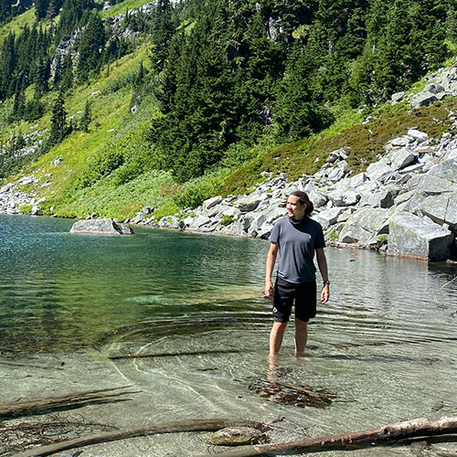
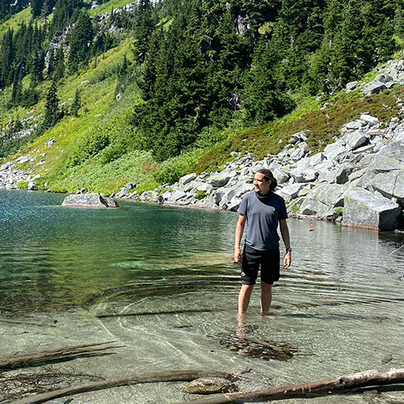

Blake Agrade's SCC IT162 Portal
Welcome
 

Hello there!
I'm Blake and I am currently in the Web Development program at Seattle Central College. For many years I've worked in the Restaurant/Bar industry as well as having owned and operated a business of my own. In the current economic climate, I've decided to make a change in carreer paths, and what better way than pursuing something I've always had an interest in. In the future I hope to combine strong web design skills with development and pursue a front-end development job.
I've always been drawn to technology and the languages surrounding it. I atteneded a tech/computer science program through my school as an elementary school kid. Through high school in the late 90's and early 2000's I taught myself the basics of HTML, CSS, and PHP and the basics of photoshop. In turn I built websites and entered graphic design challenges as a hobby.